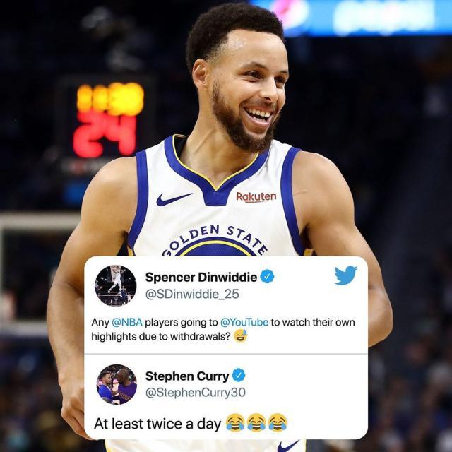
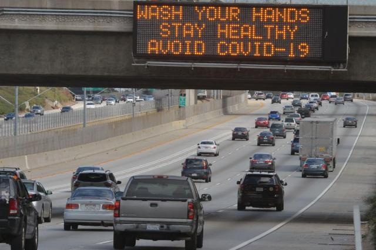

新冠疫情，美国是否会重演意大利发生的一切？
原文链接 备份链接 美国的情况将会变得多糟糕？华盛顿州州长杰伊 · 伊斯利（Jay Inslee）在 3 月 10 日曾表示，仅仅在华盛顿州，两个月内感染人数就可能达到 6.4 万人。而该数据是目前全美公布确诊人数的 16 倍，根据美国约 …
体坛周报特约记者张子旻洛杉矶报导
“人在美国，刚下飞机…”
哈哈哈，开个玩笑。笔者确实在洛杉矶，此刻老老实实地待在自己的公寓里。之所以借用这一网络名梗为自己这篇“疫情日记”开头，是因为这本意中带着炫耀、自满、甚至“优越感”的话语，放到眼下反而代表着麻烦和风险：对欧美国家的考验，才刚刚开始。

前两天朋友圈的这样一条让我哭笑不得：中国人打了抗疫之战的上半场，外国人打了下半场，而在美华人打满全场。的确，作为在美百万中国学子的一员，自一月份以来心里这颗石头就一直悬着。春节时家人还在感叹，我与他们虽相隔万里却躲过了疫情。可才过去两周，从洛杉矶启程芝加哥报道全明星周末前，我却犹豫要不要带上口罩，那时病毒在美国已开始蔓延。如今，更是不得已取消了度假计划，学校毕业典礼是否举行也要打个问号。
从大家对疫情的反应来看，体育真乃美国人生活中无法割舍的一部分。许多美国民众开始关心起这个病毒或是开始意识到问题的严重性，是从“NBA或将空场比赛”的消息传出才开始的。

勒布朗·詹姆斯就空场比赛的问题做出回答时，我就在湖人更衣室里，和他距离不过两米。当时他已洗过澡穿戴整齐，等不及要走出更衣室和等候在外的爱妻一起回家，用开着玩笑的语气和记者调侃“我才不打呢”。想必那时他也并不完全清楚状况，但一天后他显然明白这项举措实则明智，作为联盟的门面，他向媒体重新作出了理性谨慎的回答。
社交媒体上大家拿2k训练模式的画面调侃着未来观众席空无一人的NBA比赛，可没有人想到，病毒的猖狂让联盟还没来得及实施此举就不得不跳到下一步：停赛。

上周三发生的事对美国老百姓震撼不小。政坛，特朗普前不久刚会见过的巴西政要确认新冠病毒感染；娱乐界，家喻户晓的“阿甘”汤姆·汉克斯和夫人在澳大利亚确诊；体育界，爵士两位球星测出阳性让NBA立即宣布无限期停赛……美国的恐慌情绪自那天真正爆发。生鲜、饮用水、厕纸的抢购潮也是从那天起进入有些失控的局面，俩大妈肉搏争夺货架上最后一卷纸巾的场面也开始出现。ESPN 记者Dave McMenamin 去超市采购时甚至还遇到了快艇队的贾麦考·格林……
对国内外无数篮球迷和包括我自己在内的所有NBA从业者来说，这个赛季太过难受。从来没有哪一次，NBA充斥着如此多的尴尬、愤怒、悲痛和恐慌。以肖华为首的联盟高层们仿佛“本命年没穿红裤衩”，面临一次比一次艰巨的危机。

昨天和一位美国朋友吃饭，我问起她家人对疫情的看法和态度，她说他们依然认为新冠不过是另一种流感。美国CDC统计出的流感死亡人数，是许多人看低新冠病毒的论据。即使CDC的领导已经承认此前流感死亡人数的统计数据中很可能掺杂了感染新冠的死者，但社交媒体上“流感都死了这么多人，这个冠状病毒只是传染性强一些罢了”的论调还是影响不浅。我不止一次地在Instagram上回复一些不把病毒当回事儿的美国网友，为他们“科普”病毒的威力和中国成功抗疫的经验。
幸好，虽然错过了把疫情扼杀在摇篮里的时机，美国的一些决策人总体来说比民众更谨慎。两周前硅谷各巨头就已计划让员工居家办公，洛杉矶也在今天正式关闭酒吧影院并限制餐馆的服务，旧金山几乎封城，新泽西州采取宵禁……在私家车出行为主、人口密度松散的美国，只要采取并遵守措施，疫情很难失控一般地爆发，但抗疫依然是艰巨漫长的过程。

NBA与我们的阔别，很可能远不止30天这么短。詹姆斯多了时间调整休息，也多出了机会陪伴家人，同时也不忘到球馆“包场”训练；像布克这样的年轻人，终于可以好好在游戏世界里沉浸几天了。库里承认自己在网上一遍又一遍观赏着自己的集锦，莫兰特昨天还穿上所有装备拍了一段搞笑抖音……粉丝固然想念比赛，但没有人比球员本身更渴望重回赛场了吧？
窗外，洛杉矶的天空这几天罕见地阴雨连连，向来水泄不通的高架车流也稀疏了。数着日子度过这段“宅男”时光的我，为全世界所有抗击疫情的人祈祷，也希望下一次走进斯台普斯的这天，能来得早一点，再早一点。
原文链接 备份链接 美国的情况将会变得多糟糕？华盛顿州州长杰伊 · 伊斯利（Jay Inslee）在 3 月 10 日曾表示，仅仅在华盛顿州，两个月内感染人数就可能达到 6.4 万人。而该数据是目前全美公布确诊人数的 16 倍，根据美国约 …
原文链接 备份链接 当人类生存的主题被病毒、大流行病裹挟时，在白宫坐镇的特朗普、民间看好的疾病专家安东尼·福西和美联储主席鲍威尔纷纷出招，是老旧的套路还是定海神针，还未可知 文 |《财经》特派记者 金焱 发自华盛顿 编辑 | 苏琦 3 …
原文链接 备份链接 Original 杨大可 DeepTech深科技 DeepTech深科技 About Feature DeepTech是一家关注新兴科技产业化的全链条内容、服务、数据和投融资平台，致力于构建一个全球科技创新合作网络。 …
原文链接 备份链接 在美国过去200多年抗击传染病的经验中，最重要的一条也许是：学会利用“坏消息”去纠正问题，并把它变成习惯和制度 ***********金焱 | 文*********** …
原文链接 备份链接 目前包括中国大陆在内，全球已经有41个国家和地区出现了疫情，其中，韩国是中国大陆之外疫情蔓延最快的国家。 尽管如此，世卫组织不希望在“没有谨慎和清晰地分析事实情况之前”仓促宣布疫情为全球“大流行病” 文 |《财经》特派 …